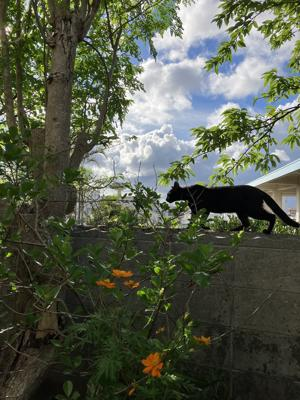
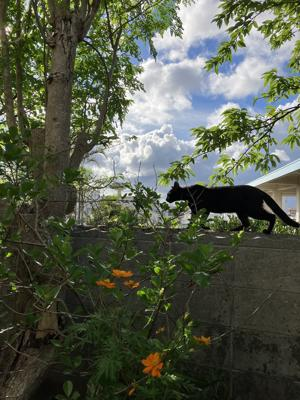

うるがいの話 ある日
最新: 付箋紙【うるがいの話 ある日】とは 一日だけのプログです
『うるがいの話』の最新一日だけのプログで、通信料が少なく経済的だ。カニの画像をクリックすると全ての日付が載る『うるがいの話』サイトを表示します
|
|
【うるがいの話】 うるがい(ｳﾙｶﾞｲ urugai)とは、『もずくがに』の名前でとても大きくなります。 |
|---|---|
|
|
【カミマヤーの話】 猫のことを方言でマヤーといいます。カミマヤー（kamimayaa）とは、神の猫のことです。 |
|
【たながぁの音楽】 たながぁ（ﾀﾅｶﾞｰ tanagaa）とは手長えびのことで、何種類かあり大きいのは車 エビぐらいになります。 |

|
【ぶながぁの話】 ぶながぁ(ﾌﾞﾅｶﾞｰ bunagaa)とは、赤い髪の毛、赤い身体、そして身長は１ｍ２０ｃｍ ぐらい、川の蟹を食べているの目撃された。場所は沖縄県国頭郡大宜味村のと ある村僕の隣近所に住んでいる爺さんから、聞いた話です。 |
|
|
【ギーマの話】 ギーマ(giima)とは、山原の里山に咲くスズランに似た、 花を付けます。実は食べられます、 気が付くと口の周りが紫になっています。 |
2023年09月13日 (水）付箋紙
16:09
 

お義母さんをデイケアサービスに送ったあと家に戻って来た。ヨメが、お義母
さんは精神科から処方されている漢方の薬を、全部飲まずに塵箱に捨ている！
と。ヨメが、お義母さんに問いかけると苦いからと答えた。幼児と同じだ。
ギターコードＡがカポ２のＧになるのはなぜ
『ブルーハーツの青空』の曲の三線版を完成させた、そして三線の３弦に展開
させたが、全然弾けないものになった。仕方ない、キーをかえてみるべと音符
を移調する。上手く収まった。そして、最後のギターコードの移調である。い
ろいろ試行錯誤してみる・・・フふと机の右側の壁に貼ってある『ギターコー
ドＡがカポ２のＧになるのはなぜ』２年前に書いたメモだ。改めて、ネットで
ヒントを探す。おお、あった正しくその疑問に答えるサイトが。
カポあり、なしの両方で曲のキーを変えてみよう
長い間の疑問が解けた。だから、嬉しくなった。気分はルンルン、ついでに『
確実に上達するための「ギター基礎固め」 渡辺 具義（著）』の本を注文す
る。そして、付箋紙を剝がす。
１６時０１分 ビットコインの総資産 ￥１１、０９８（↑１３４）